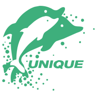

Appearance
持续沉淀大模型应用、服务端开发与前端工程化知识，构建从基础原理到项目实践的技术体系
聚焦大模型基础、提示词工程、RAG、Agent 与应用开发，记录从原理学习到工程落地的实践经验。
涵盖 Java、Python、Node.js、微服务、数据库、中间件与容器化，沉淀服务端架构和工程实践。
系统整理 HTML、CSS、JavaScript、TypeScript、Vue、React、浏览器原理及前端工程化核心知识。